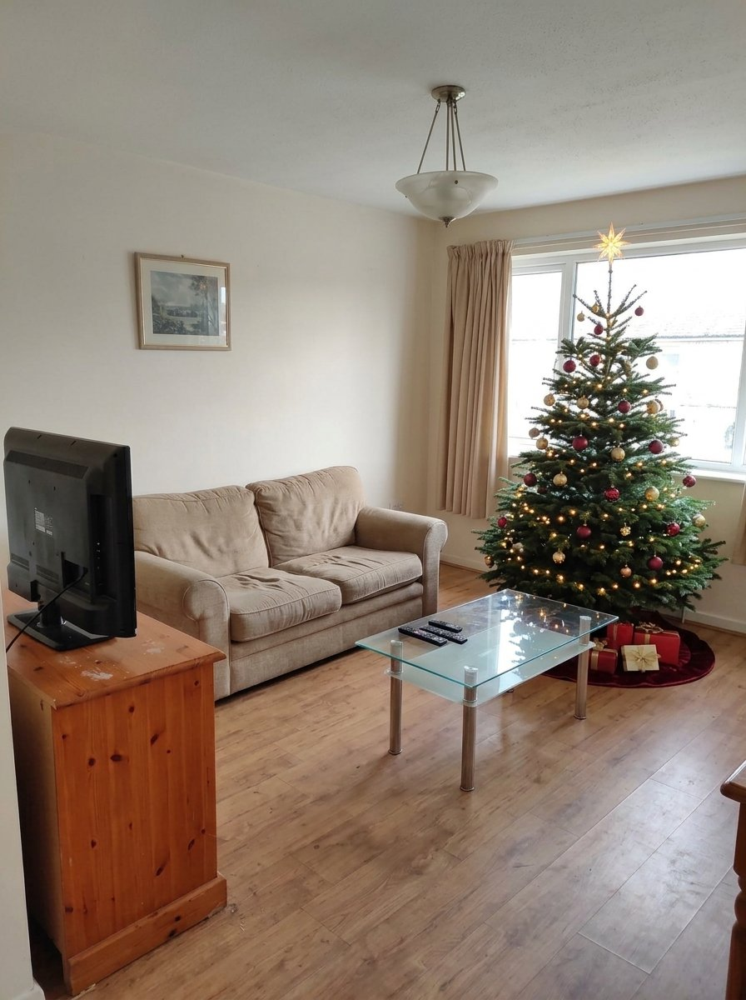
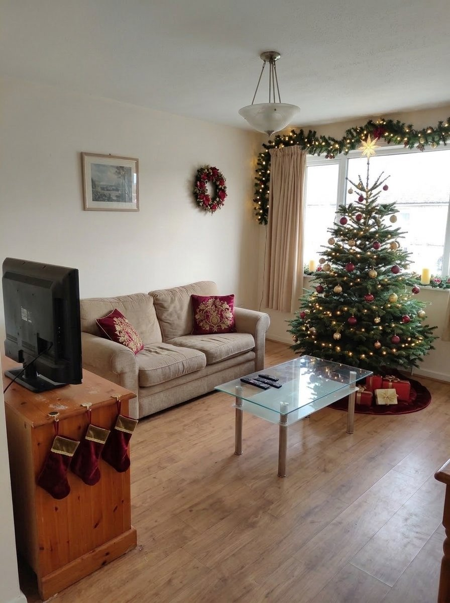
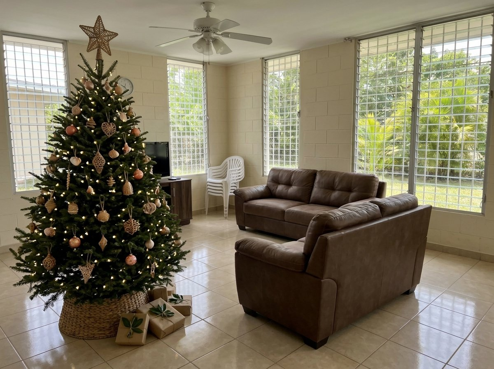
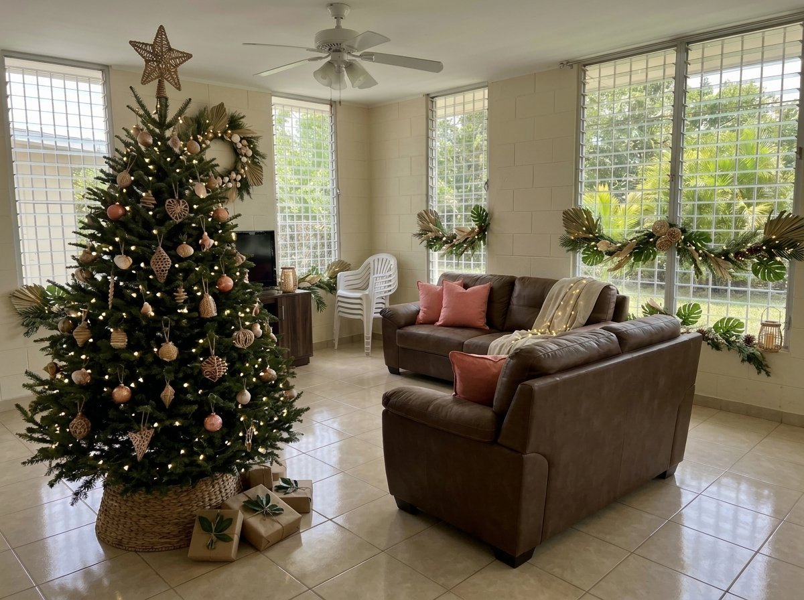
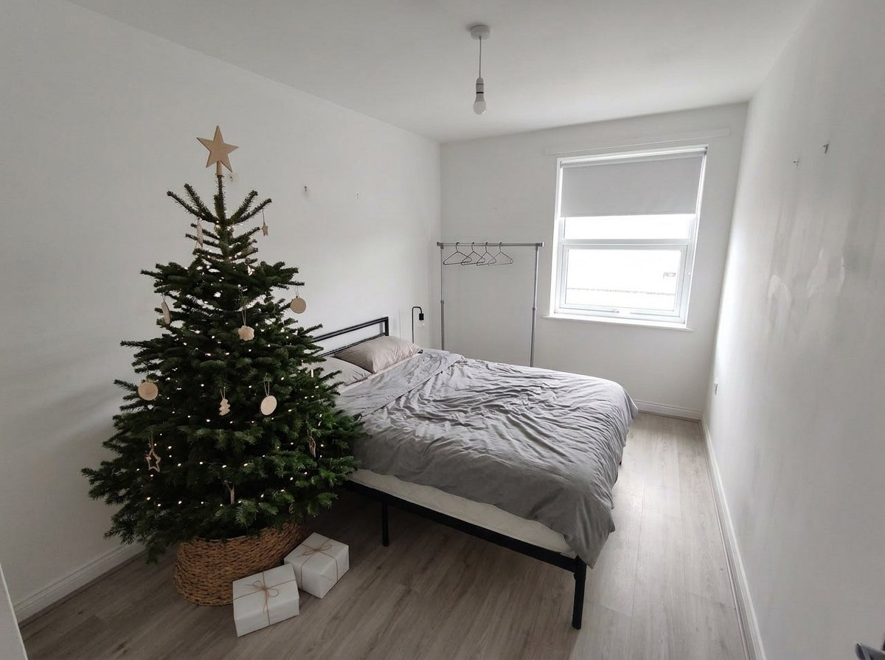
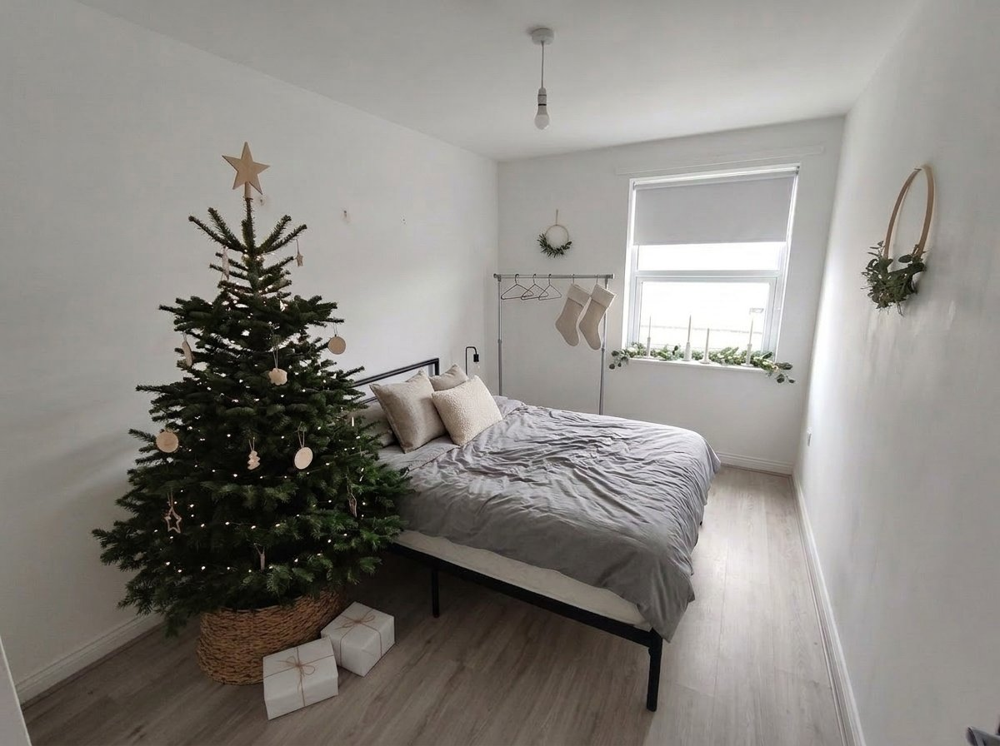
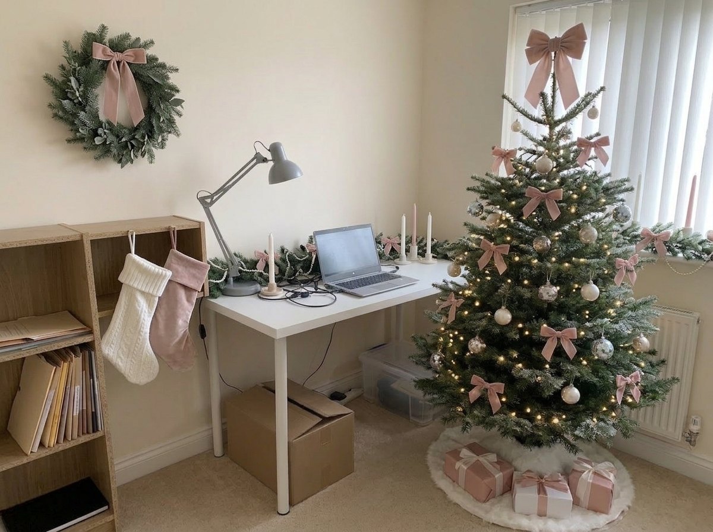
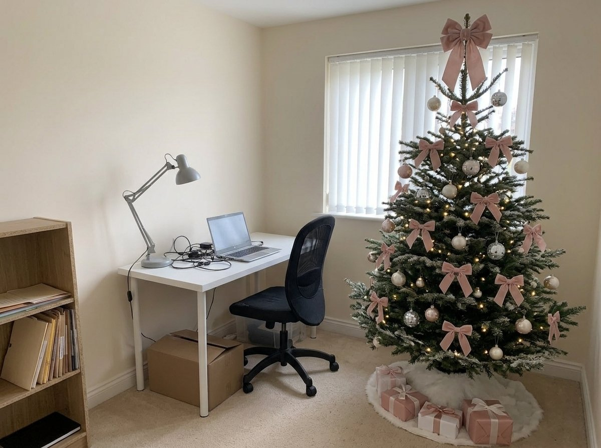
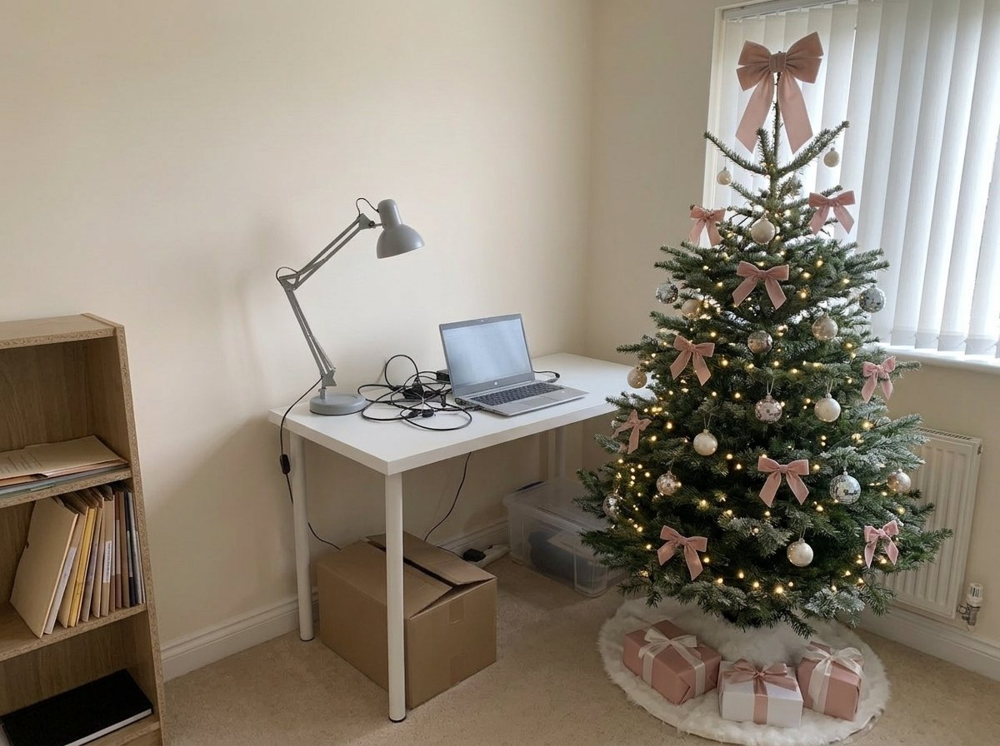

1/4 pass | 4 designs, 9 model images (2.25 per design)
Classic, auto spot. Sofa, armchair, glass table, TV and pine chest stay put.
FAIL Pilot (plain tree prompt). The tree step swapped the armchair for the tree. Decor step fine.
frameMatch of the served image against the photo: 0.74 | model images: 2 | 19 s | HTTP 200


Tropical, tapped front left. Two sofas, TV unit and stacked chairs stay put; tree on the tap.
PASS Pilot: plain tree prompt, then decor step. Tree on the tap, sofas, TV unit and stacked chairs in place.
frameMatch of the served image against the photo: 0.62 | model images: 2 | 27 s | HTTP 200



Nordic, auto spot. Bed, nightstand and clothes rail stay put.
FAIL Pilot (plain tree prompt). The tree step took out the nightstand and lamp. The decor step itself kept everything.
frameMatch of the served image against the photo: 0.70 | model images: 2 | 19 s | HTTP 200



Coquette, auto spot. Desk, office chair, shelf and boxes stay put.
FAIL Pilot (plain tree prompt). Tree step redrew the room (0.03), its retry dropped the office chair and invented a radiator. Decor step fine.
frameMatch of the served image against the photo: 0.48 | model images: 3 | 27 s | HTTP 200



